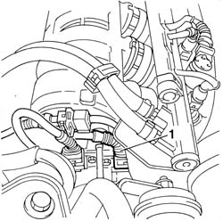
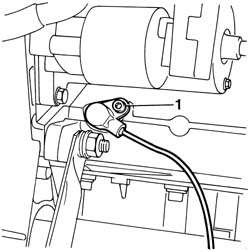
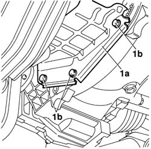
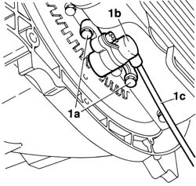
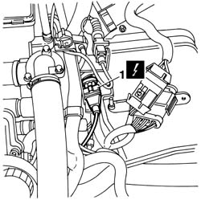
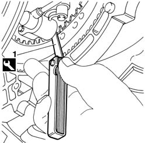
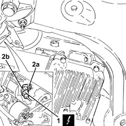
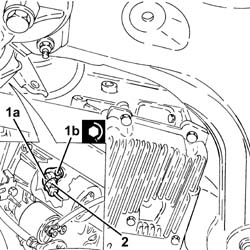

5510C34 rpm and timing sensor (single) - r+r
- Path
- Procedures > 55 ELECTRICAL EQUIPMENT > 5510 ENGINE IGNITION > 5510C coil, ecu, sensors > 5510C34 rpm and timing sensor (single) - r+r
- Kind
- repair procedure (removal / refitting; the operation number is the code)
- Applies to
- engines: 1.6 TS , 1.8 TS, 2.0 JTS, 2.5 V6, 2.0 JTS; all production periods
- Interactive page
- https://sloeber94.github.io/elrnDB-a156/en/#/3238402
Applies to: engines: 1.6 TS , 1.8 TS; all production periods
 Removing
Removing
 Refitting
RefittingPlace the car on a ramp.
Applies to: engines: 1.6 TS ; all production periods
1. Disconnect the electrical connection for the rpm and timing sensor.
 | Name | Connector |
|---|---|---|
1 | Rpm sensor |

Applies to: engines: 1.6 TS ; all production periods
Disconnect the electrical connection for the rpm and timing sensor on the side part of the air intake casing (VIS device), timing side.
| Name | Connector |
|---|---|---|
- | Rpm sensor |
Applies to: engines: 1.6 TS , 1.8 TS; all production periods
Raise the car.
7055B54 under-engine guard - r r
1. Undo the bolts and remove the rpm and timing sensor together with its wiring.

Applies to: engines: 1.6 TS , 1.8 TS; all production periods
Refitting
RemovingFit the rpm and timing sensor together with its wiring to the crankcase and tighten the retaining bolt.
7055B54 under-engine guard - r r
Lower the vehicle.
Applies to: engines: 1.6 TS ; all production periods
Connect the electrical connection for the rpm and timing sensor to the connector located on the side of the air intake casing (VIS device), timing side.
| Name | Connector |
|---|---|---|
- | Rpm sensor |
Applies to: engines: 1.6 TS ; all production periods
Connect the electrical connection for the rpm and timing sensor to the connector fastened to the air intake casing from the timing side.
| Name | Connector |
|---|---|---|
- | Rpm sensor |
Applies to: engines: 2.5 V6; all production periods
Removing
Refitting1076B52 exhaust pipe (one) leaving l/h or r/h exhaust manifold - r + r
1. Remove flywheel protection ( 1a) and rpm sensor by unscrewing the three bolts (1b).

Applies to: engines: 2.5 V6; all production periods
1. Unscrew retaining bolts (1a) and remove rpm sensor (1b) from its seat. Then release lead (1c) from the core hitches fastened to the body.

Applies to: engines: 2.5 V6; all production periods
1. Working from inside the engine bay, disconnect the electrical connection and withdraw the rpm sensor.
| Name | Connector |
|---|---|---|
1 | Rpm sensor |

Applies to: engines: 2.5 V6; all production periods
Refitting
Removing1. Fit the engine rpm sensor and secure to the crankcase. Use a feeler gauge to check that the gap between sensor and engine flywheel is 0.8 - 1.5mm.
 | Name | Country |
|---|---|---|
1 | Feeler gauge | 1.895.113.000 |

Applies to: engines: 2.5 V6; all production periods
Connect the electrical connection and secure the electrical lead to the core hitches on the engine.
Fit the engine flywheel protection and securing using bolts.
1076B52 exhaust pipe (one) leaving l/h or r/h exhaust manifold - r + r
Applies to: engines: 2.0 JTS, 2.0 JTS; all production periods
Removing
RefittingEnsure that the ignition key is in the OFF position, then disconnect the negative battery terminal (-).
| Name | Connector |
|---|---|---|
- | Battery |
Proceed with removal 7055B54 under-engine guard - r r .
Proceed with removal 1076B18 rigid section of exhaust pipe between catalytic converter and silencer - r + r .
1. Disconnect the electrical connection for the rpm sensor.
| Name | Connector |
|---|---|---|
1 | Rpm sensor |
2. Undo the bolt (2a) and remove the rpm sensor (2b).

Applies to: engines: 2.0 JTS, 2.0 JTS; all production periods
Refitting
Removing1. Place the rpm sensor (1a) in its seating and secure it tightening the bolt (1b) to the specified torque.
 | Fastening | Component | Ø | Value (daNm) |
|---|---|---|---|---|
1b | - | RPM SENSOR | M6 | (Engine crankcase side) 0.8 ÷ 1.0 |
2. Connect the electrical connection for the rpm sensor.

Applies to: engines: 2.0 JTS, 2.0 JTS; all production periods
Proceed with refitting 1076B18 rigid section of exhaust pipe between catalytic converter and silencer - r + r .
Proceed with refitting 7055B54 under-engine guard - r r .
Connect the negative (-) battery terminal.
Remove the car from the ramps.
Topics linked from this page (6)
- 1076B18 rigid section of exhaust pipe between catalytic converter and silencer - r + r
- 1076B52 exhaust pipe (one) leaving l/h or r/h exhaust manifold - r + r
- 5530B10 battery - r+r
- 7055B54 under-engine guard - r r
- A1B Battery ( BATTERY NEGATIVE )
- K46 Rpm sensor
Topics that link to this page (5)
- 1020A20 crank case oil sump - r + r clean seals for sealant application
- 1020D10 front crank shaft oil seal cover - r + r and replace seals with timing belt removed
- 1020D12 front crank shaft oil seal cover - r + r and replace seals
- 1084B16 engine oil pump - r+r vehicles with a/c
- 1084B23 oil pump control return - r r